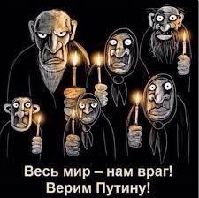
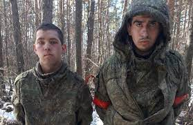
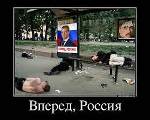
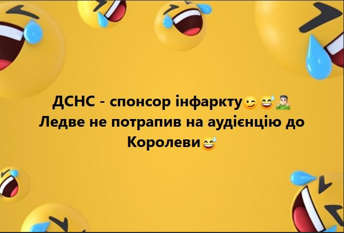
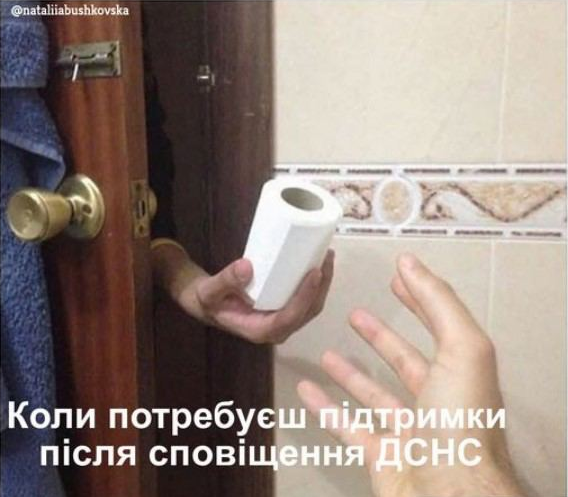

Війна
Путін хотів показати військову могутність РФ, а тепер просить допомоги у КНДР та Ірану - Блінкен
Президент Путін думав, що його вторгнення покаже російську військову могутність. Замість цього ійська армія звертається до Північної Кореї та Ірану заради необхідних їй постачань. Водночас українські оборонні можливості продовжують посилюватися, завдяки їх керівництву, мужності військових підтримці союзників та партнерів
  Їдемо до Криму
Крики, паніка та затори на дорогах: реакція росіян на вибухи у Криму
Незабаром після вибухів у соцмережах з’явились відео, як у росіян та туристів, що мандрують до Криму після окупації Росією, почалась паніка.
Укарїнці вже планують коли будуть їхати в свій улюблений Крим, Україна дає не багато часу для його звільнення від окупантів, міст вже хитається, кажуть бабусі у дворі.
Коронавірус
В Україні набирає обертів коронавірус: за тиждень зафіксовано понад 16 тисяч випадків - МОЗ
Що кажуть Українці с приводу цього:
Їмо москалів як пігулки що вказує на добре підвищення здоров'я, піднятий тонусю. Тому всім Українцям рекомендіція вбивати окупантів, це полегшить життя всій цивілізації.
Перевірка спец сигналу
На передодні почали тестувати спецсигнал на тривогу в телефонах, не звжаючи встановлений додаток чи ні.
Реакція була у всіх різна, але факт що це всих напугало коли ти стоїш в магазині з купую людей і водночас всих кричить телефон, і після бачиш як люди лягають на підлогу!
Скажемо так, вибухи вже не так лякають як цей спесигнал!
 